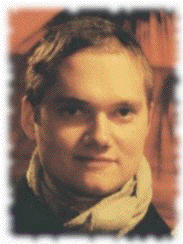

Introduction

Large Theories
- Many things ... symbols, axioms, theorems
- Ontologies, mathematical KBs, etc
- Many superfluous axioms for a proof
Syntactic Approaches
- Plaisted and Yahya (2003)
- Sutcliffe and Dvorsky (2003)
- Urban (2006)
- Meng and Paulson (2006)
- Google (forever)
This Semantic Approach
- Based on Pudlak (2007), attributed to Vyskočíl
- Uses a syntactic relevance measure as an ordering heuristic
- Uses semantics to guide selection
- Focus on extensions that improve implemented performance
- Outperforms underlying ATP system